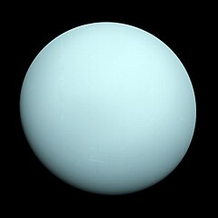
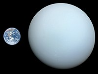

اورانوس[۱۱] هفتمین سیاره از نظر نزدیکی به خورشید[۱۲] و سومین سیاره از نظر اندازه و چهارمین سیاره از نظر جرم در سامانه خورشیدی است. اورانوس هر ۸۴ سال و ۷ روز یکبار به دور خورشید میگردد. همچنین هر ۱۷ ساعت و ۱۴ دقیقه یک دور به دور خودش میچرخد. اورانوس دارای بیش از ۲۷ قمر است که میراندا، آریل، آمبریل، تیتانیا و اوبرون از شناختهشدهترین آنها هستند. این سیاره را ویلیام هرشل در سال ۱۷۸۱ میلادی کشف کرد.[۱۳] اورانوس یکی از سیارات هشتگانهٔ منظومهٔ خورشیدی که از لحاظ بُعد فاصلهاش نسبت به خورشید در ردیف هفتم پس از کیوان (زحل) قرار گرفتهاست. فاصلهٔ متوسط این سیاره تا خورشید ۲٬۸۶۹٬۶۰۰٬۰۰۰ کیلومتر[۱۳] و ۱۴٫۵ بار از کرهٔ زمین بزرگتر است. اورانوس ۲۷ ماه طبیعی دارد. این سیاره با چشم غیرمسلح دیده نمیشود.[۱۴] محور حرکت وضعی این سیاره کاملاً با مدار حرکت انتقالیاش منطبق است. سفرهای اکتشافی به این سیاره کمتر از ده مأموریت بوده[۱۵] که شاخصترینش مأموریت وویجر ۲ بود که این فضاپیما در ژانویهٔ ۱۹۸۶ به آن رسید.[۱۶
جرم این سیاره برابر (۰٫۰۰۱۳ ± ۸٫۶۸۱۰)×۱۰۲۵ کیلوگرم و ۱۴٫۵۳۶ برابر زمین است[۶] و چگالی آن ۱٫۲۵ برآورد میشود[۳۰] در نتیجه احتمال میرود از جو بسیار ضخیم، گوشتهای مایع و هستهای جامد و کوچک تشکیل شده باشد.[۳۴][۳۹] شتاب گرانشی آن نیز ۹۰ درصد شتاب گرانشی زمین تخمین زده شدهاست.[۳۰] دمای بخش مایع آن ۲۳۰۰ درجه سانتیگراد و هسته آن ۷۰۰۰ درجه سانتیگراد است
 کجی محورتنها زهره کجی محور بیشتری از اورانوس و برابر ۱۷۷ درجه دارد. اما علت این کجی احتمالاً برخورد جسمی به ابعاد زمین یا چند برابر آن به این سیاره و در اوایل دوران زندگیاش بودهاست.[۳۰][۳۹] البته کاندیدهای دیگری هم مطرح هستند مانند برخورد یک دسته بزرگ از دنبالهدارها در اوایل تشکیلش که این خود وجود یک اقیانوس بزرگ داخلی آن را نیز توجیه میکند
یدان مغناطیسی این سیاره ۵۵[۵۰] تا ۵۸٫۵ درجه[۱۳] نسبت به محور چرخش آن تفاوت دارد و این بیشترین مقداری است که در میان سیارات ثبت شدهاست[۴۰] و پیشبینی میشود که مرکز مغناطیسی آن در مکان متفاوتی نسبت به مرکز سیاره و با فاصلهای حدوداً ۸٬۰۰۰ کیلومتری[۱۳] باشد.[۴۹] وویجر ۲ اثبات نمود که در اطراف اورانوس میدان مغناطیسی قویای قرار دارد اما شدت آن یک دهم میدان مغناطیسی زحل است.[۳۳] با این حال قدرت آن بهطور متوسط ۵۰ بار نیرومندتر از میدان مغناطیسی زمین است و دنبالهای به طول ۴۶۵٬۰۰۰ کیلومتر(۱۸ برابر شعاع خودش[۴۰]) دارد.[۱۳] و در این مغناطوکره به علت برخورد طوفانهای خورشیدی و دیگر پرتوهای کیهانی پلاسماهایی با دمای ۱۰٬۰۰۰ کلوین به وجود میآید.[
صفحه بعد صفحه قبل